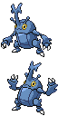

Maps and Events
OFFICIAL FIELD GUIDE
Petalburg Woods
Move Needed: HM01 (Cut) for the eastern half
The woods join the northern and southern halves of Route 104, and they
are the first place this game shows its hand. Four Mega Stones lie in
here, more than any other early map, and the wild list is twice the
length of the route outside. Bring Poké Balls and a second Pokémon: the
Aqua grunt in the middle of the wood fights a double battle.
ITEMS
- Scolipite
- Heracronite
- Butterfrenite
- Lopunnite
- Net Ball (hidden)
- Net Ball (hidden)
- Nest Ball (hidden)
- Leaf Stone (hidden)

To Route 104
To Route 104
To Route 104
Deep Wood
Heracronite
Scolipite
Butterfrenite
Lopunnite
POKÉMON APPEARANCES
| POKÉMON | CONDITIONS |
|---|---|
| Shroomish | Common |
| Slakoth | Common |
| Heracross | Uncommon |
| Caterpie | Uncommon |
| Buneary | Uncommon |
| Pichu | Uncommon |
| Pineco | Rare |
| Foongus | Rare |
| Burmy | Rare |
| Blipbug | Rare |
| Ferroseed | Rare |
| Sewaddle | Very rare |
| Audino | Rustling grass |
| Pikachu | Rustling grass |
| Crustle | Rock Smash |
| Dwebble | Rock Smash |
Wild levels run 6 to 8 in the grass, and 5 to 16 out
of smashed rocks, which is above the grass all through this map.
THE FOUR STONES
| STONE | WHERE | NEEDS CUT | MEGA IT MAKES |
|---|---|---|---|
| Scolipite | Far east, past the cut trees | Yes | Mega Scolipede |
| Heracronite | Centre of the wood | No | Mega Heracross |
| Butterfrenite | North-west corner | No | Mega Butterfree |
| Lopunnite | Western track, south end | No | Mega Lopunny |
A stone is invisible until Steven's bracelet is
yours, so a first pass through here before Rustboro will walk past all
four. Come back with the Mega Ring.

PETALBURG WOODS END TO END

Four viewpoints, stitched in order of travel, south entrance to north
28